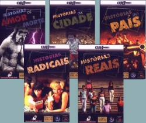
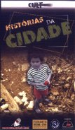

CURTAS GAÚCHOS EM VÍDEO (Cortos Gauchos en Video)
|
(VHS, 5 x 60 min aprox, 1998) Para los que aprecian las historias emocionantes, la Casa de Cinema de Porto Alegre seleccionó veintiún cortometrajes, en cinco cintas de alta calidad. Son historias del país, de la ciudad. Historias reales, radicales. Historias de amor y de muerte. Son historias que van a quedar para siempre en su recuerdo. Historias que retratan a Brasil y sus habitantes como sólo el cine puede hacerlo. |
 |
Sepa por qué Dorival no puede bañarse. Descubra por qué Dolores mandó a seguir a su marido. Acompañe el cotidiano inusual de Noeli. Ríase con la tragedia de Hilário Pestana. Y emociónese con la historia de un tomate. ¿Usted cree que no se va a emocionar con la historia de un tomate? Se equivoca.
Cinco cintas, donde ficción y realidad se mezclan en la dosis correcta, con el poder de síntesis del cortometraje y alta calidad de producción. Compruebe lo que los festivales de Berlín, Clermont-Ferrand, Cuba, Rotterdam y Huelva ya saben: algunos de los mejores cortos del mundo se hacen aquí.
Veintiuna películas, cinco cintas con lo mejor del cine brasileño, ahora a su disposición.
 VOLUMEN 1 - HISTORIAS DE LA CIUDAD ISLA DE LAS FLORES (Jorge Furtado, 1989)
EN EL AMOR (Nelson Nadotti, 1982)
PASAJEROS (Carlos Gerbase y Glênio Póvoas, 1987)
LA MUERTE EN EL EDIFICIO IMPERIO (Beto Souza, 1992)
ÂNGELO ANDA DESAPARECIDO (Jorge Furtado, 1997)Duración total: 57 minutos.
VOLUMEN 2 - HISTORIAS DEL PAÍS EL DÍA EN QUE DORIVAL ENFRENTÓ LA GUARDIA (Jorge Furtado y José Pedro Goulart, 1986)
BARBOSA (Jorge Furtado y Ana Luiza Azevedo, 1988)
MEMORIA (Roberto Henkin, 1990)
BATALLA NAVAL (Liliana Sulzbach, 1993)
LA MATADORA (Jorge Furtado, 1994)Duración total: 67 minutos.
VOLUMEN 3 - HISTORIAS DE AMOR Y MUERTE DIOS EX-MACHINA (Carlos Gerbase, 1995)
EL CUERPO DE FLAVIA (Carlos Gerbase, 1990)
LA COSA MÁS IMPORTANTE DE LA VIDA (alumnos del curso de Introducción al Hacer Cine, 1990)
UN HOMBRE SERIO (Dainara Toffoli y Diego de Godoy, 1996)Duración total: 66 minutos.
VOLUMEN 4 - HISTORIAS REALES ESTA NO ES TU VIDA (Jorge Furtado, 1991)
VIENTRE LIBRE (Ana Luiza Azevedo, 1994)Duración total: 64 minutos.
VOLUMEN 5 - HISTORIAS RADICALES SEXO & BEETHOVEN, EL RENCUENTRO (Carlos Gerbase, 1997)
OBSCENIDADES (Roberto Henkin, 1986)
CLASES MUY PARTICULARES (Carlos Gerbase, 1988)
PROYECTO PULEX (Tadao Miaqui, 1991)
VICIOUS (Rogério Brasil Ferrari, 1988)Duración total: 58 minutos.

LA distribución de los CORTOS GAUCHOS EN VÍDEO para todo el territorio brasileño es un trabajo conjunto de la Casa de Cinema de Porto Alegre con las distribuidoras Cult Películas y Funarte-DECINE.
La Financiación del proyecto es del FUMPROARTE, Fondo Municipal de Apoyo a la Producción Cultural y Artística de la Municipalidad de Porto Alegre.